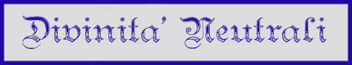

Il Dio degli Oceani e degli Abissi

Il Dio degli Oceani e degli Abissi
Potente dio del mare, il suo culto non conosce confini ed è adorato da marinai e comunità sulla costa, ma anche da tritoni, ninfe e creature sottomarine. E’ un dio irascibile e vendicativo, mette in difficoltà i marinai in navigazione per ricordare loro che l’unico padrone dei mari è lui . Può arrivare se irato a distruggere intere città costiere senza timori e il suo potere nel mare è incontrastato da altre divinità. E’ sicuramente una delle divinità che possiede maggiore potere divino. Spesso i suoi templi sono semi-sommersi o completamente sommersi.

Le
essenze primordiali di Arelia
In un tempo assai remoto la civiltà degli uomini non era che ai suoi primi albori. In questo periodo chiamato "Era Tribale" gli esseri umani vivevano in tribù, erano spesso nomadi e praticavano l'arte della caccia. Erano tempi duri e gli uomini erano in balia della furia degli elementi. Alcuni di loro, però, impararono ad adorare gli elementi primordiali di cui il mondo era fatto. Questi sciamani, che impararono a sfruttare gli elementi a proprio vantaggio ed a placarne la furia distruttrice erano individui potenti e rispettati. Ancora oggi, nel mondo di Arelia, esistono intere e popolazioni che adorano le Forze Primordiali della Natura. Si pensi alle tribù di Sotoniani stanziatesi nelle terre selvagge, alle comunità Dwolf che vivono nelle remote valli montane ed a tutte le tribù umanoidi lontane dalla civiltà e dalle caotiche città. Il culto delle Forze della Natura si ricollega ai quattro elementi principali: Acqua, Aria, Terra e Fuoco. Ogni sciamano, nonostante rispetti tutte le forze, sceglie fra questi l'elemento cardine al quale è devoto.

Il
Dio della
protezione silveriana e del commercio
L’unico culto dei misteriosi silveriani , è un culto diffuso nella repubblica Silveriana , è un culto che si preoccupa solo del benessere della comunità . Secondo tale culto il Dio d’argento Silvisk essendo stato adorato dal popolo Silveriano ha deciso di proteggerlo e farlo prosperare , per cui è di vitale importanza che tutta la Repubblica e l’intera città sia nelle grazie del Dio in modo tale che costui non lasci il popolo silveriano in balia degli elementi e delle divinità del male . Dopo la morte i veri fedeli di Silvisk saranno graziati sulla terra e la loro anima andrà nel Ypior ( la grande anfora ) dove tutte le anime dei Silveriani saranno custodite dal Dio e dal quale scenderanno le anime dei nuovi silveriani . Solo un silveriano dunque può divenire reale fedele di Silvisk e ogni silveriano ha nel suo spirito l’intero spirito del suo popolo e dei grandi del suo passato . In compenso per le adorazioni il Dio fa posperare il suo popolo e lo tiene al riparo e al sicuro da quelle che sono le guerre fra le cosiddette divinità buone e cattive . Silvisk è anche il Dio della legge scritta e giusta , che sia severa ma non crudele , un Dio che abolisce ogni sorta di corruzione che spinge verso la burocrazia , verso il rispetto delle cariche e dei ruoli sociali ma non negli eccessi . Lo studio e la cultura sono importanti ma non tutti gli uomini si devono dedicare a ciò , alcuni devono essere bravi manuali e contadini e come tali venir rispettati . Gli esseri e le persone caotici ( non cattivi ) che vivono senza regole e nel caos sono pericolose per la sicurezza del mondo e quindi del popolo silveriano , quelli fra questi che sono anche cattivi e magari rozzi e primitivi devono venire soggiogati dalla cultura e dalla supremazia silveriana . Il popolo silveriano deve prosperare nella legge e sarà guerra con i popoli che lo minaccino . La guerra non è uno strumento di offesa , quindi , ma è uno strumento per il mantenimento della pace e della sicurezza . Enormi templi devono ringraziare questo potente Dio e in compenso per i suoi benefici costui vuole grandi sacrifici e molta devozione .

Il
Dio nanico della solidità fisica e morale
Il
culto di Srodan si perde nella notte dei tempi, coincidente con quello delle
altre razze longeve di semi-umani. Vista il relativo isolamento della razza
nanica non c'è stato lo scambio di credenze ecumeniche tali da far evolvere e
cambiare i dogmi della religione nanica, che è tendenzialmente invariata da
migliaia di anni.
Srodan è il padre di tutti i Nani, colui che ha donato il Martello e l'Incudine
alla popolazione nanica affinché la stessa rimanesse salda nel periglioso
cammino della vita. Fin dall'inizio della loro storia, infatti, i Nani hanno
dovuto affrontare le difficoltà insite nel vivere nelle profondità della roccia
ed hanno dovuto lottare contro orde innumerevoli creature che pure avevano
scelto di dimorare tra le rocce montuose.
Srodan, quindi, rappresentando il punto saldo della razza nanica incarna da un
lato l'esigenza di un rigoroso ordine e di una saggia giustizia e dall'altro la
fermezza richiesta quotidianamente al popolo nanico.